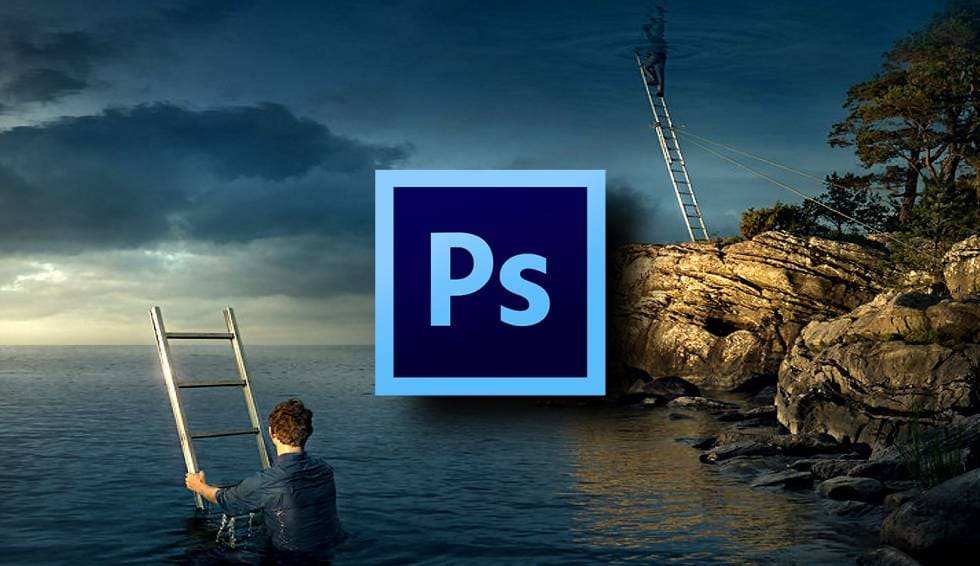
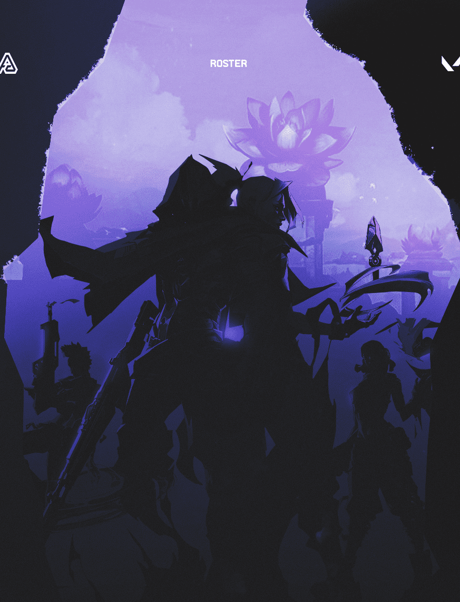

Servicios

Photo Manipulation
Consiste en manipular fotos utilizando técnicas analógicas o digitales para crear ilusiones o trucos. Su uso ha aumentado y ha generado interés debido a su impacto cultural y ético.

Lineas gráficas
Un conjunto de elementos visuales distintivos que identifican tu marca.

Logo / Identidad Visual
Es el procedimiento mediante el cual se generan los componentes visuales que distinguirán a tu compañía dentro de la gran cantidad de marcas existentes en el mercado.